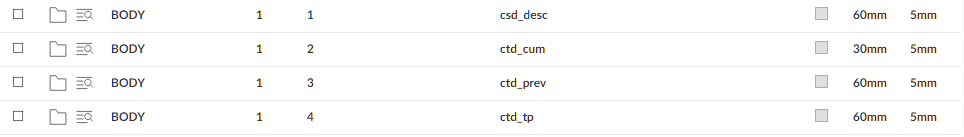

In the body of the certificate, you may want detail lines showing this period values, previous values, and cumulative values for each of the following: gross certified, retention, discount,
You do not need to define a separate line for each detail line you want to print.

To enter the Rate on the line, use the field csd_rate. (The rate will not print if it is 0 or 100, or if the calculated value was over-ridden when the certificate was entered.)
For example:
IDs: GRC,CON,RET,DIS,VAT,PAY